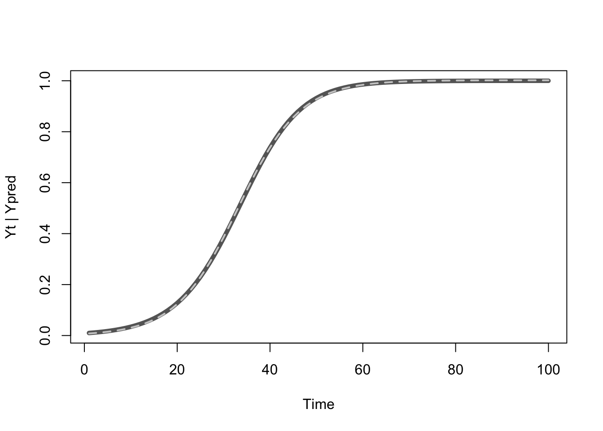
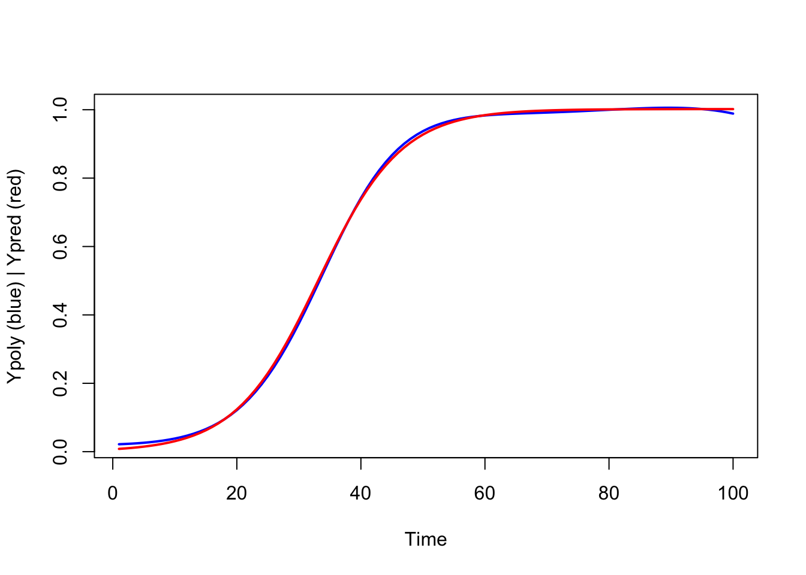

D.3 Using R to fit the solutions
There are several packages that can perform nonlinear regression analysis, the function most resembling the approach used by SPSS is nls in the default stats package.
The easiest way to do this is to first define your function (i.e., the solution) and then fit it using starting values for the parameters.
library(rio)
df <- import("https://raw.githubusercontent.com/FredHasselman/DCS/master/assignmentData/BasicTSA_nonlinreg/GrowthRegression.sav", setclass = "tbl_df")
# Logistic growth
# Same as SPSS syntax: PRED_=K*Yzero/(Yzero + (K-Yzero) * EXP(-1*(r * K * Time))).
log.eq <- function(Yzero, r, K, Time) {
K*Yzero/(Yzero + (K-Yzero) * exp(-1*(r * K * Time)))
}There is one drawback and you can read about in the help pages:
Warning
Do not use nls on artificial “zero-residual” data.
This means, “do not use it on data generated by a deterministic model which has no residual error”, which is exactly what the timeseries in this assignment is, it is the output of the quadratic map in the chaotic regime.
So, this will give an error:
# Fit this function ... gives an error
# The list after 'start' provides the initial values
m.log <- nls(Yt ~ log.eq(Yzero, r, K, Time), data = df, start = list(Yzero=.01, r=.01, K=1), trace = T)It is possible to fit these ideal data using package minpack.lm, which contains function nlsM.
library(minpack.lm)
m.log <- nlsLM(Yt ~ log.eq(Yzero, r, K, Time), data = df, start = list(Yzero = .01, r=.01, K=0.1))
summary(m.log)
Formula: Yt ~ log.eq(Yzero, r, K, Time)
Parameters:
Estimate Std. Error t value Pr(>|t|)
Yzero 7.055e-03 8.983e-05 78.53 <2e-16 ***
r 1.491e-01 4.170e-04 357.59 <2e-16 ***
K 1.002e+00 4.376e-04 2289.42 <2e-16 ***
---
Signif. codes: 0 '***' 0.001 '**' 0.01 '*' 0.05 '.' 0.1 ' ' 1
Residual standard error: 0.002865 on 97 degrees of freedom
Number of iterations to convergence: 13
Achieved convergence tolerance: 1.49e-08In order to look at the model prediction, we use predict() which is defined for almost all modelfitting functions in R
Ypred <- predict(m.log)
plot(ts(df$Yt), col="gray40", lwd=5, ylab = ("Yt | Ypred"))
lines(Ypred, col="gray80", lwd=2, lty=2)
Then we do a polynomial regression using lm:
# Mimic the SPSS syntax
attach(df)
df$T1 <- Yt * Time
df$T2 <- Yt * (Time^2)
df$T3 <- Yt * (Time^3)
df$T4 <- Yt * (Time^4)
detach(df)
m.poly <- lm(Yt ~ T1 + T2 + T3 + T4, data=df)
summary(m.poly)
Call:
lm(formula = Yt ~ T1 + T2 + T3 + T4, data = df)
Residuals:
Min 1Q Median 3Q Max
-0.0117491 -0.0046800 -0.0000683 0.0045719 0.0112732
Coefficients:
Estimate Std. Error t value Pr(>|t|)
(Intercept) 2.113e-02 1.258e-03 16.80 <2e-16 ***
T1 6.366e-02 7.169e-04 88.80 <2e-16 ***
T2 -1.497e-03 3.100e-05 -48.28 <2e-16 ***
T3 1.510e-05 4.425e-07 34.12 <2e-16 ***
T4 -5.529e-08 2.055e-09 -26.90 <2e-16 ***
---
Signif. codes: 0 '***' 0.001 '**' 0.01 '*' 0.05 '.' 0.1 ' ' 1
Residual standard error: 0.005506 on 95 degrees of freedom
Multiple R-squared: 0.9998, Adjusted R-squared: 0.9998
F-statistic: 1.264e+05 on 4 and 95 DF, p-value: < 2.2e-16Then, predict and plot!
Ypoly <- predict(m.poly)
plot(ts(Ypoly), col="blue1", lwd=2, ylab = ("Ypoly (blue) | Ypred (red)"))
lines(Ypred, col="red1", lwd=2)
SPSS computes an \(r^2\) value for nonlinear regression models, which doesn’t make a lot of sense if you think about it. Here we van just compare the residual errors:
- Polynomial regression: \(0.005506\)
- Analytic solution: \(0.002865\)"
Slightly less residual error for the analytic solution, using less parameters to fit the model (3 vs. 5). More important:, the paramters of the analytic solution have a direct interpretation in terms of growth processes.